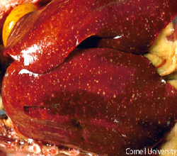

Fowl Cholera
Fowl Cholera is a contagious disease affecting domesticated and wild birds. It is a septicemic disease associated with high morbidity and mortality and a characteristic diarrhoea. This disease mostly affected in chickens, turkeys, geese and birds.
Pasteurella multocida
- Fever, anorexia, ruffled feathers, fetid diarrhea (White watery or green mucoid) and sudden death without premonitory signs
- Birds that survive may show emaciation and dehydration
- Nasal & oral discharge
- Depression, conjunctivitis, dyspnoea, lameness, torticolis and swelling of the wattles, sinuses, leg and wing joints etc.

- Petechial haemorrhage on heart, gizzard & abdominal fat.
- Free yolk in peritoneal cavity with regressing folicle
- Liver enlarge & may contains white necrotic foci.
- Erisen-Vet powder-1 gm/litre for 3-5 days or, Sulprim-Vet suspension 1ml/liter for 3-5 consecutive days
- OtetraVet-50 powder-1gm/2liter water for 3-5 consecutive days or, 1 gm/2 kg feed for 5 days
- Liva-Vit -1ml/liter water twice for 3 days
- Nephrocare liquid-1 ml/litre for 3-5 days Or, as directed by the Registered Veterinary Physician